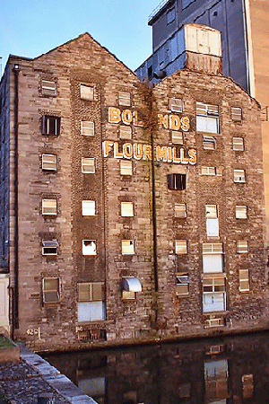

The 3rd Battalion under Commandant Eamon de Valera occupied Boland’s bakery around the corner from the flour mills, one mile to the south-east of the GPO, on Grand Canal Dock. The battalion was at a key location as it controlled the railway line and the main road from Dun Laoghaire (then Kingstown) to the city centre.
Aside from the battle at Mount Street Bridge on Wednesday, there were no direct assaults on Boland’s until Thursday. The garrison held out until Sunday when Nurse Elizabeth O’Farrell brought news of the surrender. Plans to develop the mills as a triple-tower multistorey hotel and office complex, complete with public plaza and restaurant, were rejected in October 2007.
Since the recession, plans to redevelop the mills are still a subject of debate. The National Asset Management Agency (NAMA) has offices close by at the National Treasury Management Agency (NTMA) HQ. It is housed at Treasury Building, Grand Canal Street Dublin 2.
